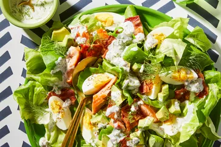

SALMON COBB SALAD

Ingredients
- ¾ cup buttermilk
- ½ cup mayonnaise
- ¼ cup minced shallot
- 3 tablespoons chopped fresh dill
- 1 tablespoon lemon juice
- ½ teaspoon salt
- 1 head Bibb lettuce, leaves separated
- 8 ounces cooked bacon, cut into pieces
- 1 avocado, cut into 1/2-inch pieces
- 3 hard-boiled eggs, quartered and halved
- 1 (3 ounce) package smoked salmon
- ground black pepper to taste
DIRECTIONS
STEP 1
Whisk buttermilk, mayonnaise, shallot, dill, lemon juice, and salt together in a bowl until dressing is smooth; refrigerate.
STEP 2
Mix lettuce, bacon, avocado, eggs, and salmon together in a bowl. Add dressing and toss until coated; season with black pepper.